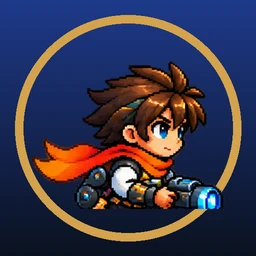
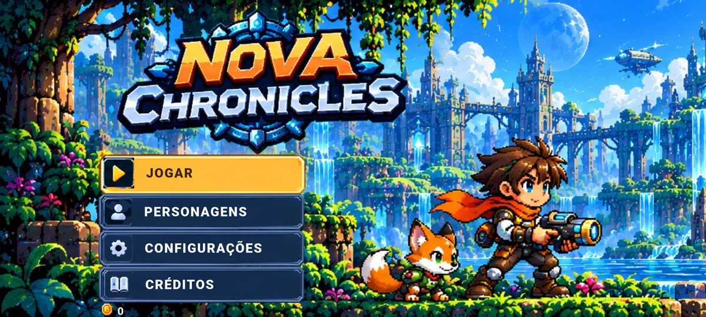
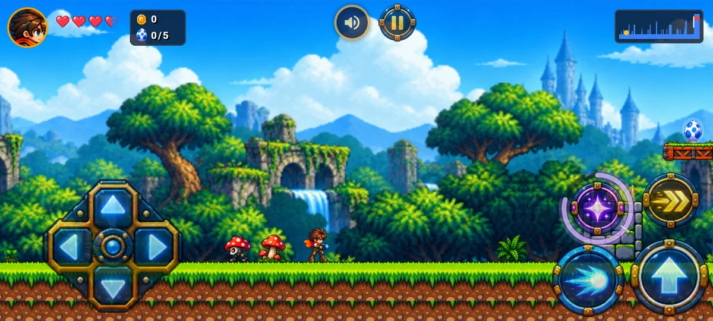
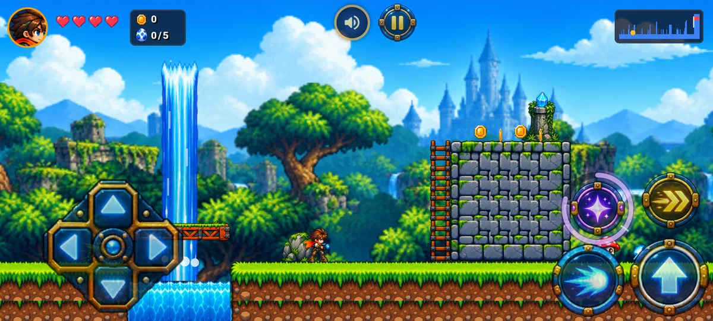
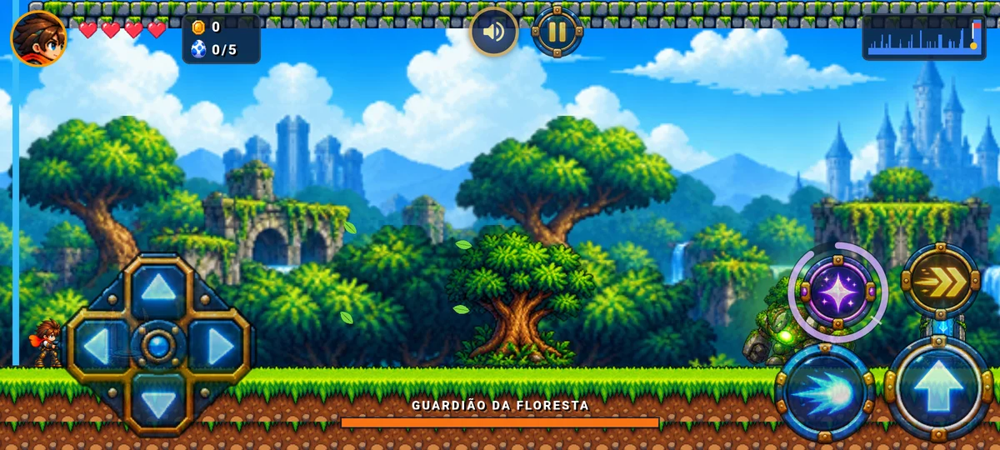
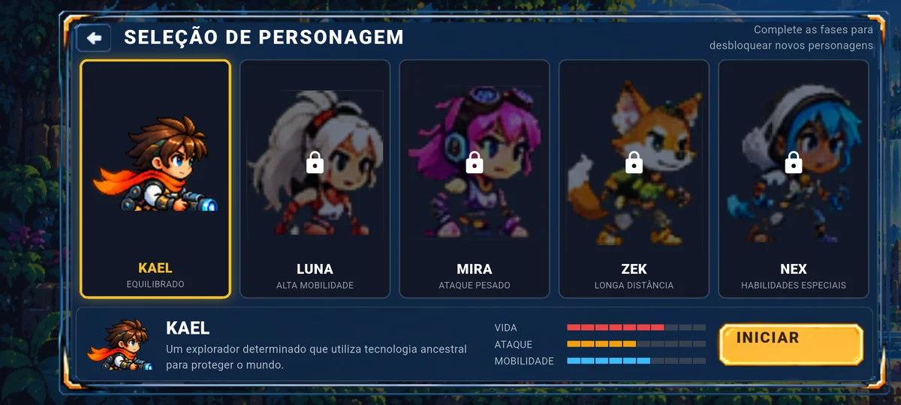

Aventura de ação em pixel art
Corra, pule, atire e escale ruínas tecnológicas no meio da floresta até enfrentar o Guardião que protege o lugar.
Versão de testes, grátis, direto no navegador (celular, tablet ou computador). Jogue com o celular deitado. No iPhone, para tela cheia, use Compartilhar → Adicionar à Tela de Início.
O Nova Chronicles é um jogo de plataforma e ação 2D em pixel art, jogado com o celular deitado. Você controla o Kael, um explorador determinado que usa tecnologia ancestral para proteger o mundo. Pelo caminho há buracos, espinhos, cachoeiras, torres para escalar e inimigos que aparecem aos poucos, para você ir pegando o jeito.
A primeira fase é a Floresta Tecnológica, uma floresta cheia de ruínas antigas e cachoeiras, que termina na luta contra o Guardião da Floresta: um golem gigante de pedra e musgo com uma árvore nas costas.
Ação de plataforma
Corra, pule, dê dash no chão e no ar e suba escadas para chegar a lugares altos.
Tiro carregado
Toque para atirar ou segure o botão para carregar um tiro bem mais forte.
Habilidade especial
Uma onda de energia que atravessa os inimigos. A energia aparece num anel em volta do próprio botão.
Inimigos variados
Cogumelos robôs, insetos voadores, plantas que cospem sementes e robozinhos, cada um com seu jeito de atacar.
Chefe da fase
O Guardião da Floresta lança folhas afiadas e pula para esmagar o chão. Fique atento aos movimentos dele.
Segredos
Cinco ovos secretos escondidos pela fase, além de moedas, corações e cristais de energia.
Novos heróis
Luna, Mira, Zek e Nex: personagens com estilos diferentes, liberados ao completar as fases.
Feito para o celular
Controles grandes, dá para pular e atirar ao mesmo tempo com um polegar, tiro automático opcional e modo fácil.
Trilha de rock
Música original para a fase e para a luta contra o chefe, com volume separado para música e efeitos.
Sem cadastro
Sem conta e sem internet: o progresso fica só no seu aparelho.




